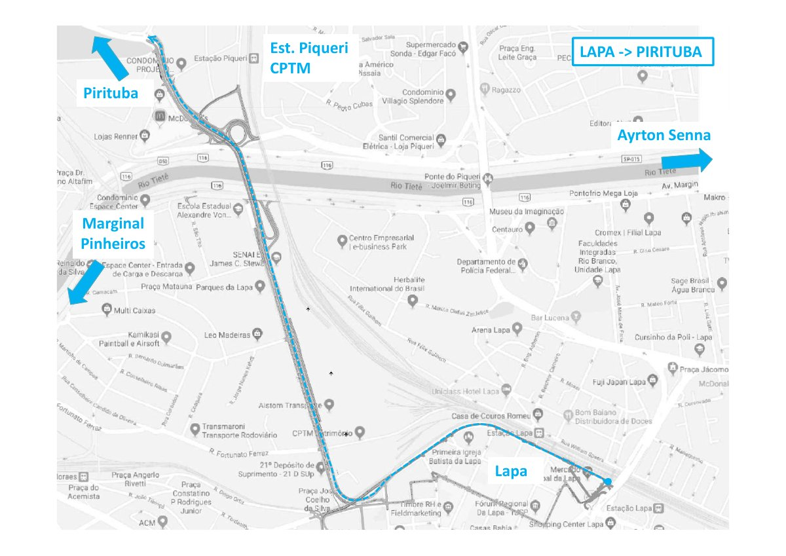

SFJM / LVR • experimento visual • documento 2019
Complexo Lapa–Pirituba: os dois sentidos, em movimento
Compare Lapa → Pirituba (laranja) e Pirituba → Lapa (azul) no mesmo mapa. A circulação ilustrada deriva das páginas 19 e 20 da apresentação SPObras de agosto de 2019; não representa vias liberadas nem trânsito real.
Protótipo — não publicado
Base geográfica: SPObras (2019). As linhas coloridas e carrinhos são recursos explicativos, não rotas operacionais. A base permanece na resolução JPG do PDF; zoom não acrescenta nomes de ruas.